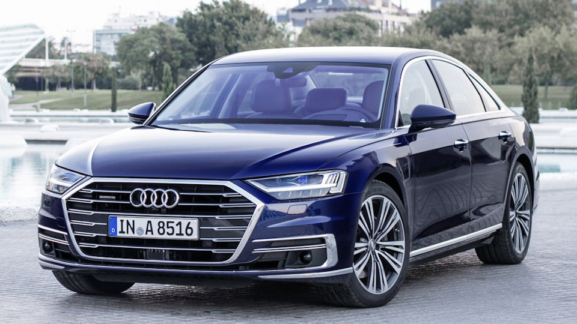

В июле две тысячи семнадцатого на специальном мероприятии в Барселоне состоялась презентация флагманского седана Audi A8 в новом кузове D5. Мировая премьера авто прошла в сентябре на Франкфуртском автосалоне.
В компании остались верны своему принципу, сохранив облик новой Ауди А8 2018-2019 (фото и цена), хотя передняя и задняя части автомобиля все же подверглись серьезной ревизии, тогда как в профиль модель осталась полностью узнаваемой.
Передок на «восьмерке» оказался выполнен в стиле концепта Prologue с широкой хромированной шестиугольной решеткой радиатора и зауженной головной оптикой. Последняя уже в базе идет матричной, а задние фонари выполнены с использованием органических светодиодов. Корма новой модели Audi A8 2019 выделяется узкой светотехникой, рассеченной хромированной полосой, над которой расположилась длинная полоска стоп-сигнала. В целом, в оформлении экстерьера автомобиля стало больше острых граней, что позволило придать машине более динамичный, подтянутый и строгий внешний вид.
А вот салон Ауди А8 2019 в новом кузове преобразился полностью. По сравнению с предшественником, здесь полностью другие руль, выделяющийся необычным дизайном, полностью электронный щиток приборов, иная передняя панель, а на центральной консоли разместились два больших цветных экрана с разрешением Full HD.
В компании решили максимально отказаться от использования физических кнопок, перенеся управление практически всеми функциями и системами на сенсорные дисплеи. Сзади по умолчанию установлен трехместный диван, но за доплату авто можно оснастить двумя раздельными креслами, а топовый вариант предложил одну инновационную систему.
Речь идет о функции обогрева и массажа ступней, которую пока не предлагает никто из конкурентов новой А8. Речь идет о специальной подножке в правом переднем кресле, куда задний пассажир может пристроить ноги и максимально расслабиться. Плюс массажными пневмокамерами для спины оснащено и его мультиконтурное кресло.
Новый мультимедийный комплекс в машине получил название MIB 2+, а планшеты на подголовниках передних кресел выполнены съемными и могут использоваться вне автомобиля. Кроме того, здесь имеется самообучаемая навигационная система, функция ароматизации воздуха с двумя запахами, беспроводная зарядка для смартфонов, проекционный дисплей, обогрев центрального и боковых подлокотников, а также аудиосистема Bang & Olufsen с 23 динамиками.
В основу новой Audi A8 2018-2019 года легло шасси MLB Evo, позволившее сократить массу, по сравнению с машиной прежней генерации. Габаритная длина седана составляет 5 172 мм (+ 37), величина колесной базы — 2 996 (+ 6), ширина — 1 945 (- 4), высота — 1 473 (+ 13). Длина версии Long равна 5 302, а расстояние между осями — 3 128.
Кузов «восьмерки» четвертого поколения — это настоящее произведение инженерного искусства. В его конструкции используется три десятка различных материалов, включая углепластик, магний, разные виды стали и двадцать вариантов алюминиевых сплавов, семь из которых были разработаны специально для этой модели. Кузов стал тяжелее прежнего (281 кг), но намного прочнее и безопаснее.
В качестве силовых агрегатов для Audi A8 D5 (характеристики) доступны 3,0-литровые бензиновый TFSI (340 л.с.) и дизельный TDI (286 л.с.) движки, а также турбированные «восьмерки» объемом 4,0 л на 460 сил (бензиновая) и 435 «лошадей» (дизельная). Последняя позаимствована от кроссовера Audi SQ7. На вершине гаммы разместилась модификация с 6,0-литровым W12 от внедорожника Bentley Bentayga, но его мощность для седана снизили до 585 л.с. Все движки сочетаются в паре с 8-диапазонным автоматом, имеют полный привод quattro, а также дополнены системой Mild Hybrid со стартер-генератором и аккумулятором на 48 Вольт, позволяющих глушить ДВС в пробках и двигаться накатом.
Позже в линейке появились начальные модификации с 2,0-литровыми «четверками», а также полноценная гибридная версия A8 L e-tron quattro, в состав которой вошли трехлитровый дизель, электромотор и батарея емкостью 14,1 кВтч. Суммарная отдача 449 сил, пробег на электротяге заявлен 50 км, а аккумулятор поддерживает функцию беспроводной зарядки. В стандартное оснащение всех модификаций Ауди А8 2019 года входит пневмоподвеска, при этом за доплату ее можно оснастить активными элементами. В этом случае стабилизаторы поперечной устойчивости заменены на отдельные электромоторы и планетарные редукторы для каждого колеса. Они позволяют уменьшить крены и улучшить плавность хода, заранее подстраивая подвеску под профиль дороги, который сканирует специальная камера над лобовым стеклом. Кроме того, задние колеса здесь могут поворачиваться на угол до пяти градусов, так что радиус разворота на парковке (для короткобазной версии) получается таким же, как на седане Ауди А4. В скоростных виражах задние колеса поворачиваются в те же сторону, что и передние, улучшая стабильность.
Новую Ауди А8 оснастили настоящим искусственным интеллектом Artificial Intelligence, работу которого обеспечивают (загибайте пальцы) двенадцать сонаров, четыре видеокамеры кругового обзора, одна дополнительная фронтальная камера, одна инфракрасная камера, четыре радара средней дальности и один лазерный сканер.
Так что этот седан стал первым серийным авто с устройством лазерного технического зрения, которые ранее считались слишком дорогими для массового использования. А теперь здесь есть автопилот третьего уровня автономности, правда, использовать его производитель разрешит не раньше 2019 года, когда в Европе будут улажены законодательные проволочки. Есть и еще одно ограничение, автопилот работает лишь на скорости до 60 км/ч, но зато он не требует держать руки на руле и даже позволяет смотреть встроенный телевизор, полностью контролируя ситуацию на дороге. В этом случае самостоятельная парковка без участия водителя, включая заезд в гараж, уже не кажется чем-то удивительным.
Европейские продажи новой модели Ауди А8 (D5) стартовали осенью семнадцатого по цене от 90 600 евро, тогда как за длиннобазный вариант предстоит выложить минимум €94 100. Начало продаж в России пришлось на февраль 2018 г. По началу к нам прибыл седан только с 3,0-литровым бензиновым мотором на 340 л.с., стоимость которого начинается от 6 245 000 рублей (доплата за Long — 790 000 р). Позже к нему присоединился вариант с 460-сильным V8 4.0, за который просят от 7 860 000 р, а весной девятнадцатого до нас добрался дизельный A8 45 TDI (от 6 150 000).
В стандартное оснащение авто входят 8-диапазоный автомат, полный привод кватро, диодная головная оптика, пневматическая подвеска, кожаный салон, двухзонный климат-контроль, подогрев всех сидений, виртуальный щиток приборов, функция автоматической парковки, электропривод крышки багажника и пр. За доплату доступен широчайший перечень различного оборудования.